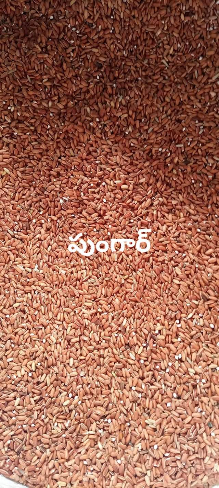

Pungar Medicinal Rice - A Nutrient-Rich Superfood
Published on: 20 Feb 2025 | 7

🌾 What is Pungar Rice?
Pungar rice is a traditional, indigenous rice variety cultivated in India, known for its high nutritional value and medicinal properties. It is often classified as a medicinal rice due to its unique health benefits. This variety is rich in antioxidants, fiber, and essential nutrients, making it a valuable addition to a healthy diet.
✅ Nutritional Value
- Rich in dietary fiber, aiding in digestion and gut health.
- High in antioxidants, helping to fight free radicals.
- Contains essential vitamins and minerals like iron, zinc, and magnesium.
- Low glycemic index, making it suitable for diabetic patients.
💡 Health Benefits
Pungar rice offers several health benefits, including:
- Boosts Immunity: The antioxidants in Pungar rice strengthen the immune system, protecting the body from infections.
- Supports Heart Health: The fiber and low cholesterol content help reduce the risk of heart disease.
- Improves Digestion: High fiber content aids in digestion and prevents constipation.
- Regulates Blood Sugar: Its low glycemic index makes it ideal for individuals managing diabetes.
🌿 Traditional and Medicinal Uses
In traditional medicine, Pungar rice is used for its therapeutic properties. It is believed to help in treating:
- Digestive disorders
- Inflammation and joint pain
- Detoxification and cleansing of the body
- Fatigue and weakness recovery
🍚 How to Cook Pungar Rice
Follow these simple steps to prepare Pungar rice:
- Rinse the rice thoroughly to remove any impurities.
- Soak the rice in water for 4-6 hours to reduce cooking time and enhance its texture.
- Use a 1:3 rice-to-water ratio for cooking.
- Simmer on low heat for 30-40 minutes until fully cooked.
- Serve hot with vegetables, curries, or enjoy as a porridge.
🌱 Farming and Sustainability
Pungar rice is grown using sustainable farming practices, often without chemical pesticides or fertilizers. This organic cultivation process retains the rice’s medicinal properties and ensures that it remains free from harmful chemicals.
🛒 Where to Buy Pungar Rice
Pungar rice is available at organic stores, local farmers’ markets, and online platforms specializing in traditional and medicinal rice varieties. When purchasing, ensure the product is certified organic for maximum health benefits.